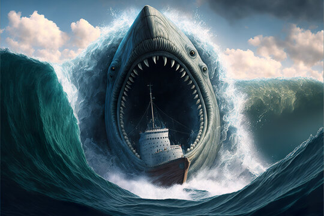

(nome científico: Carcharocles megalodon), que significa "dente grande" é uma espécie extinta de tubarão que viveu há aproximadamente 23 a 3,6 milhões de anos, durante o Mioceno Inferior ao Plioceno
Antigamente se pensava ser um membro da família Lamnidae e um parente próximo do tubarão-branco (Carcharodon carcharias). No entanto, atualmente é classificado na família extinta Otodontidae, que divergiu da do tubarão-branco durante o Cretáceo Inferior.
Embora seja considerado um dos maiores e mais poderosos predadores que já existiram, o megalodonte é conhecido a partir de vestígios fragmentários, e por isso sua aparência e tamanho máximo são incertos. Os cientistas divergem quanto à sua aparência de uma versão mais robusta do tubarão-branco, do tubarão-frade (Cetorhinus maximus) ou do tubarão-tigre (Carcharias taurus).
entanto, atualmente é classificado na família extinta Otodontidae, que divergiu da do tubarão-branco durante o Cretáceo Inferior. Aproximadamente 18 metros de comprimento. Eles também possuíam grandes dentes serrilhados, que podiam atingir incríveis 15 cm de altura total.
Sua alimentação era baseada em baleias, golfinhos, focas, possivelmente, outros tubarões.
O megalodonte foi uma espécie de tubarão extinta há cerca de dois milhões de anos. Acredita-se que esse animal tenha vivido do Mioceno Médio ao limite do Plioceno-Pleistoceno. Ele era encontrado em mares quentes e rasos de praticamente todo o planeta, o que conferiu a essa espécie o título de cosmopolita